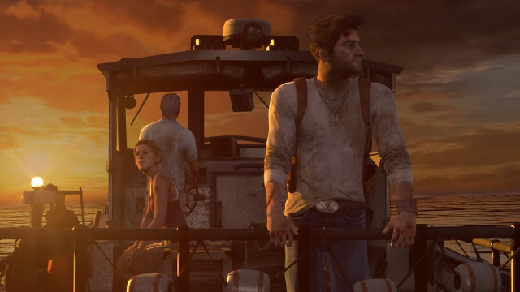
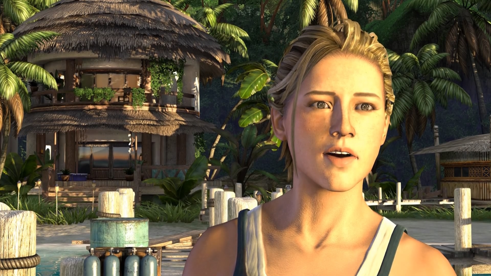

Uncharted: Drake's Fortune
Je to už patnáct let, co se nám dostal do rukou první díl herní série Uncharted. Všem milovníkům PlayStationu se jasně vybaví neohrožený lovec pokladů Nathan Drake. Tento charismatický a neohrožený dobrodruh nás provázel na herních konzolích téměř deset let. Mnozí z nás tak dodnes vzpomínají na Uncharted, jako na tu nejlepší hru v celém herním světě. Spolu s hlavním hrdinou, jeho parťákem Sullym a krásnou Elenou jsme prožívali dobrodružství, o kterém se nám může ve skutečném světě jenom zdát. Během čtyř dílů, v čele s hlavní postavou Nathanem Drakeem jsme prošli slunné ostrovy, spalující pouště i horské ledové oblasti. Jeho cesta za poklady však nikdy nebyla vůbec jednoduchá. Kromě náročného terénu bylo nutné se v každé výpravě vypořádat s vysokými počty ozbrojených nepřátel, usilující o to, dostat se k lovenému pokladu jako první. Pojďme si nyní společně připomenout první díl této jedinečné exkluzivity pro PlayStation a společně tak zavzpomínat na zážitek, jenž odstartoval snad tu nejdobrodružnější herní sérii vůbec.
Dobrodružství, akce, skvělý příběh - To je Uncharted
První díl hry začíná svižně hned od samého začátku. Nathan spolu se svou tehdy ještě kolegyní, reportérkou Elenou vyloví z moře truhlu, kde měly spočívat ostatky Sira Francise Drakea. Po jejím otevření, se zde ale místo ostatků nachází pouze jeho deník. Nathan a Elena jsou vzápětí přepadeni piráty a tak nastává ten pravý čas otestovat schopnosti hlavního hrdiny. Po vystřílení pár zásobníků, testu odolnosti tvrdých pěstí přilétne na pomoc Nathanův parťák Sully a oba je dopraví do bezpečí. Po prozkoumání obsahu deníku Nathan objeví údajnou polohu bájného El Dorada a je odhodlaný toto ztracené město najít za každou cenu. Spolu se Sullym se tak vydávají na velkolepou dobrodružnou výpravu, ale nepočítají na ni jaksi s Elenou. Postupem času oba zjišťují, že El Dorado není město, ale je tím myšlen jakýsi zlatý záhadný artefakt.
Při honbě za pokladem naráží na své úhlavní protivníky, kterými jsou Gabriel Roman a Atoq Navarro. Právě prvnímu zmíněnému dluží Sully vysoký obnos peněz a tak chce od Nathana získat jako kompenzaci indicie k nalezení El Dorada. Nathan předá Gabrielovi mapu, kterou našel uvnitř staré lodi, ale jak se ukázalo, to nebylo úplně vše co žádal. Sully je tak střelen a Nathan se musí vydat na útěk, aby si zachránil život. Při honičce džunglí se znovu setkává s Elenou, se kterou se ji nakonec podaří naskočit do letadla a ve snaze v něm utéct jsou náhle zasaženi raketou. Nezbývá jim tak nic jiného než vzít padáky a vyskočit z letadla, což vedlo znovu k jejich rozdělení. O pár kapitol později se znovu setkávají a není to nikde jinde než v místě, které je plné nepřátel, přes které se musí oba dostat.

Zmíněná Elena je nejen atraktivní reportérka, ale zároveň ostřílená dobrodružka a k Nathanovi se skvěle hodí. Jejich vztah je v prvním dílu přesně takový, jaký bychom očekávali a určitě nejednomu hráči došlo, že tihleti dva zůstanou nakonec spolu. Nathan se dozvídá z videozáznamu, který Elena pořídila, že je Sully naživu a nastupuje do vrtulníku s Gabrielem a Navarrem. Oba dobrodruzi zkontrolují mapu a vyráží pokračovat ve své honbě za pokladem. Později na Sullyho narazí a zjistí, že přežil díky deníku v jeho náprsní kapse, který zastavil kulku a zachránil mu tak život. Gabriel nepočítal s tím, že mu Nathan uteče a proto nechal Sullyho ještě naživu, aby mu pomohl najít El Dorado.
Je to svět jako z Indiana Jonese
Kromě starých historických staveb a hádanek, které Nathana celou jeho cestu provází narazí i na něco, co snad ani samotní hráči nečekali. Uvnitř hluboko jednoho chrámu na něj čekalo nepříjemné překvapení v podobě jakýchsi nestvůr, které pár pasáží hlavního hrdinu dost potrápili. Když se mu je konečně podaří přemoci a uniknout jim, shledává Elenu v zajetí Gabriela a Navarra. Ti Elenu odvedou a nechávají ji zatím naživu jako pojistku, kdyby se Nathan chtěl o něco pokusit. Musí tak najít jinou cestu k jejímu vysvobození, ale ta nevede nikudy jinudy než přes další hordu nepřátel v podobě monster a žoldáků. Jakmile se přes ně dostane spojí se se Sullym, který je v obklíčení v kostele, kam mu Nathan přiběhne na pomoc. Po drsné a náročné přestřelce oba objevují vchod do podzemní hrobky kam se vydávají a cesta je zavede přímo k našim slavným dvěma záporákům a Eleně.
Oba dva se snaží své nepřátele překvapit nečekaným zjevením, bohužel neúspěšně. Zezadu na ně vytasí zbraně žoldáci a jejich plán tak mírně pohořel. Mezitím Gabriel stojí před zlatým sarkofákem, ano je to El Dorado a je konečně nalezeno. Jenomže v tom ho Navarro povzbuzuje tím, že sarkofák je jen skořápka a skutečný poklad je uvnitř. Gabriel tak sarkofák otevře a to je něco, co se mu stane osudným. Gabriel se promění v jedno z monster a jde po Navarrovi. Ten mu ale ihned posílá přesnou střelu přímo do hlavy. Nechá přivázat El Dorado na helikoptéru a i s Elenou do ni nasedá a odlétá pryč. Ještě předtím však Nathan odvážně skáče na uchycené El Dorado a Navarro s sebou nečekaně bere na loď kam odlétá jednoho pasažéra navíc. Toho si hned po vzlétnutí všimne, jelikož byl Nathan spatřen jedním z žoldáků. Z helikoptéry se ho snaží jeden střelec zasáhnout, ale Elena ho skopne dolů a při pádu ještě stačí držet spoušť čímž zneškodní pilota. Navarro se snaží převzít kontrolu nad řízením, ale havárie je nakonec nevyhnutelná a helikoptéra dopadá na palubu lodi.
Pro Nathana nastává poslední souboj. Musí se prostřílet skrz desítky nepřátel až k Navarrovi. Tomu uštědří lekci svými bojovými dovednostmi a pak jde hned zkontrolovat Elenu. Ta stále leží v havarované helikoptéře. Nathan ji z helikoptéry vytáhne a Elena nabývá vědomí. V tom se znovu postaví na nohy Navarro s brokovnicí v ruce. Nevšimne si ale provazu od helikoptéry, který je na zemi a v jedné smyčce má strčenou svou nohu. Nathan se opře do helikoptéry, která je na hraně lodi, převrátí ji do vody a spolu s ní je stažen na dno oceánu nejen Navarro, ale i El Dorado. No a jelikož se tomu děje uprostřed oceánu, znamená to, že je bájný poklad nadobro ztracen. V závěru se objevují první náznaky silnějšího vztahu Nathana a Eleny. Sully se objeví na své lodi aby vzal oba na souš a předtím jim ukáže zlato, které našel na výpravě. Dobrodružství končí na lodi, kde všichni tři spokojeně míří na břeh s neuvěřitelným zážitkem, vrytým navěky do jejich srdcí.
Uncharted je klenot PlayStationu
Za celou cestu k nalezení pokladu musí hlavní hrdina pobýt stovky nepřátel. Hra je neuvěřitelně dobrodružná a akční. Samotný příběh je fascinující a pomocí krásných cutscén se mu podaří vás vtáhnout přímo do děje. Na dobu kdy tento díl vznikl má Uncharted skvělou hratelnost, krásnou grafiku a naprosto úžasné charaktery s hlavním hrdinou v čele, jehož si všichni hráči zamilovali. Uncharted bylo něco, co všem hráčům tehdy chybělo. Konečně jsme se stali neohroženým dobrodruhem jakým byl Indiana Jones, který sloužil jako inspirace pro vznik samotné hry. Po dohrání prvního dílu hráči jen doufali, že přijde brzy díl druhý a po něm zase další. Uncharted si udržel svou kvalitu od úplného začátku až do samotného konce a uchvátil spoustu hráčů po celém světě.